Evento de clientes · 1 de septiembre de 2026
El portal de Natural Trade y Global Forest en el teléfono de su cliente: ofertas con precio puesto en planta, su propio mercado, pedidos, crédito y un asistente que responde en español.
Acceso
Sin usuario ni contraseña que anotar.
Nadie más ve sus precios. Y si alguien cambia de puesto, se revoca el acceso en un minuto — sin cambiar contraseñas ni avisar a nadie.
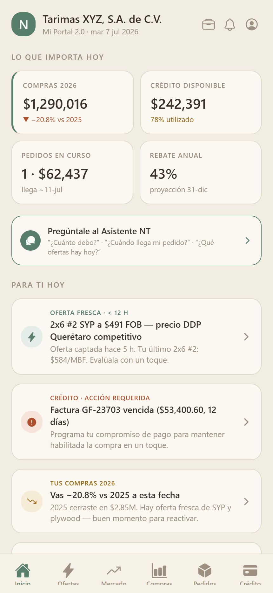
Inicio
Abre la app y ya sabe qué hacer.
Deja de perseguir información por correo y WhatsApp. La app le dice qué merece su atención hoy, antes de que él pregunte.
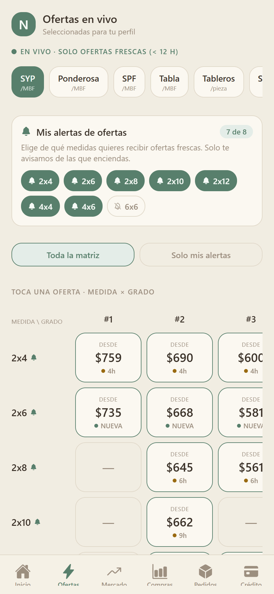
Ofertas
El corazón de la app.
Hoy el cliente compara peras con manzanas entre proveedores. Aquí ve un número comparable, sabe qué tan fresco es, y decide en segundos.
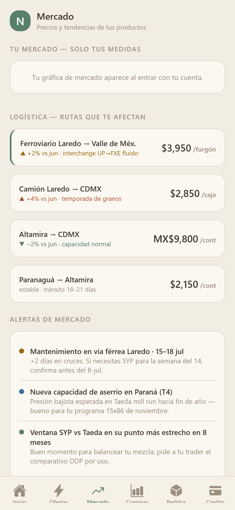
Tu Mercado
De vender madera a ayudar a comprar mejor.
Esto es lo que ningún competidor le da. Convierte la relación de proveedor a asesor — y es el argumento más fuerte de la noche.
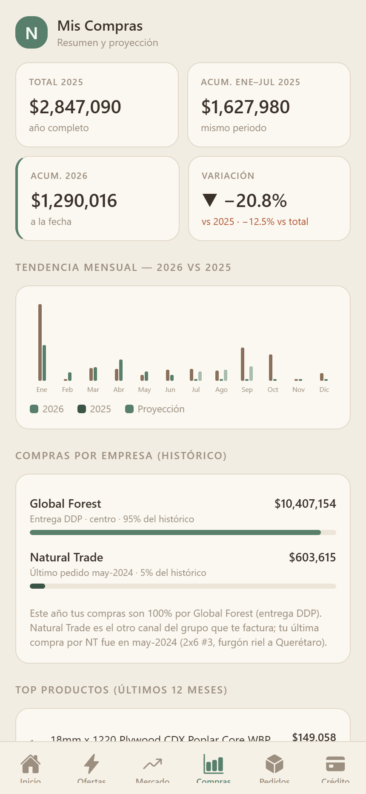
Compras
La información que hoy pide por correo.
Cierra la conversación de “mándame mi histórico”. Está siempre disponible, siempre al día y sin depender de que alguien lo prepare.
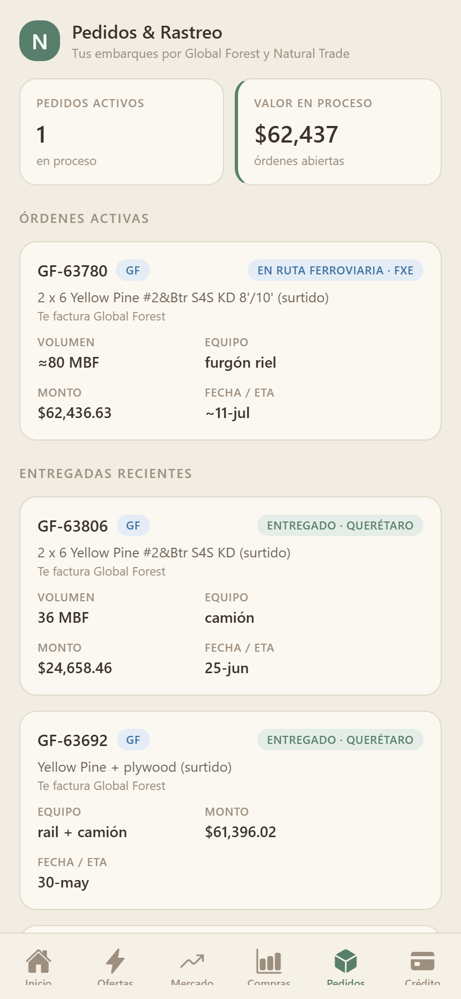
Pedidos y rastreo
La pregunta número uno, respondida sola.
Elimina la llamada diaria de “¿dónde viene mi carga?”. El cliente se entera antes de preguntar, y su equipo recupera esas horas.
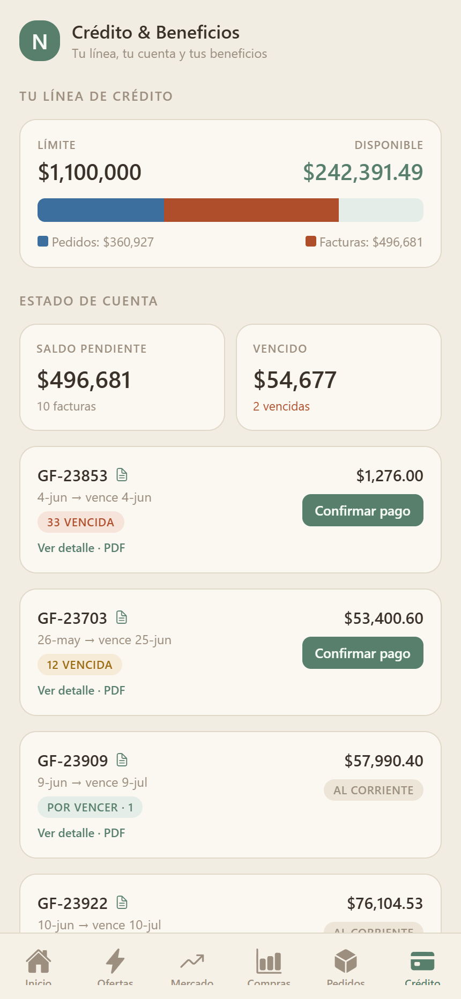
Crédito
Saber cuánto puede comprar, ahora.
Quita la fricción del momento de comprar. Si el cliente ve que tiene línea, compra; si no la ve, llama — y a veces no llama.
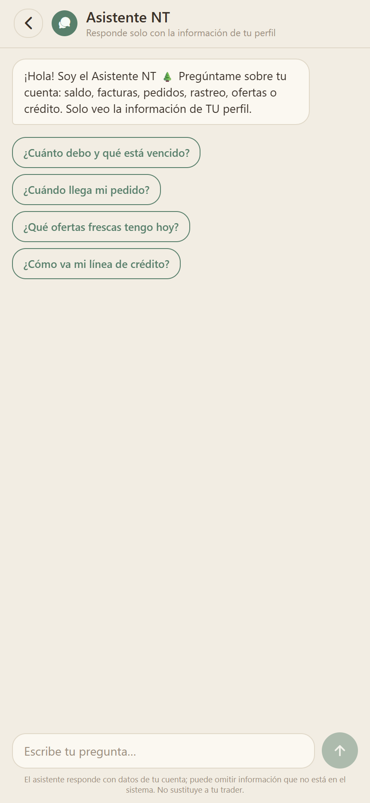
Asistente NT
Lo nuevo, y lo que más sorprende.
Nadie en el sector tiene esto. Es el momento “ah, caray” de la demostración — y la prueba de que la app entiende su negocio, no solo lo muestra.
Seguridad
Solo números autorizados, código de un solo uso y biometría en el teléfono.
Cada pantalla lleva la identidad de quien la está viendo, en toda la superficie.
Si alguien toma una captura, queda registrado quién, en qué pantalla y a qué hora.
Costos, márgenes y el motor de precios viven en el servidor. El teléfono solo muestra.
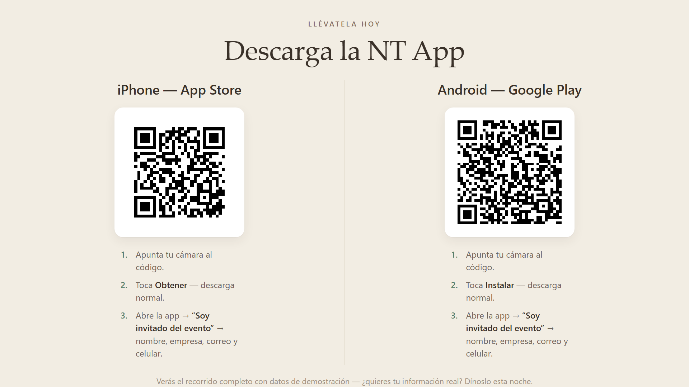
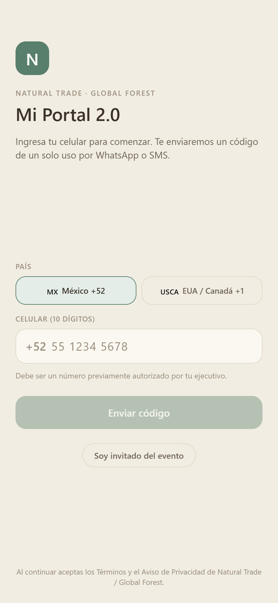
Cómo entrar · paso 1
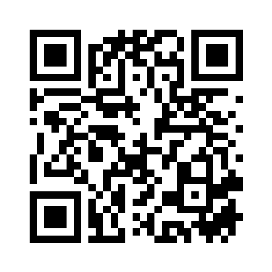
iPhone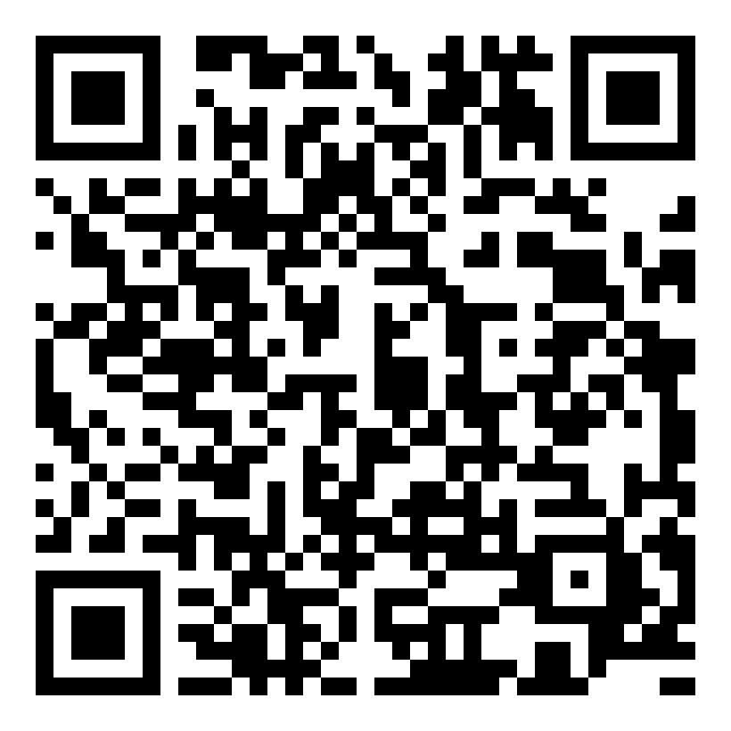
🤖 Android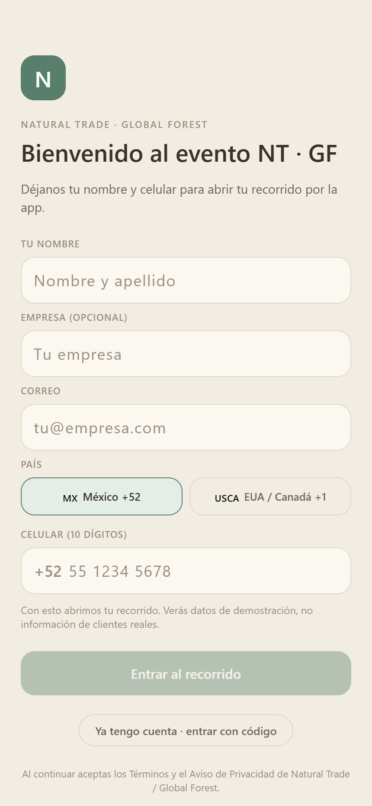
Cómo entrar · paso 2
El recorrido muestra datos de demostración — nada de clientes reales. Tu información real la conecta tu ejecutivo después.
Material del evento — escribe la clave del tablero.
Para presentar: avanza con el clicker, las flechas o clic en la lámina · F pantalla completa · B pantalla en negro.